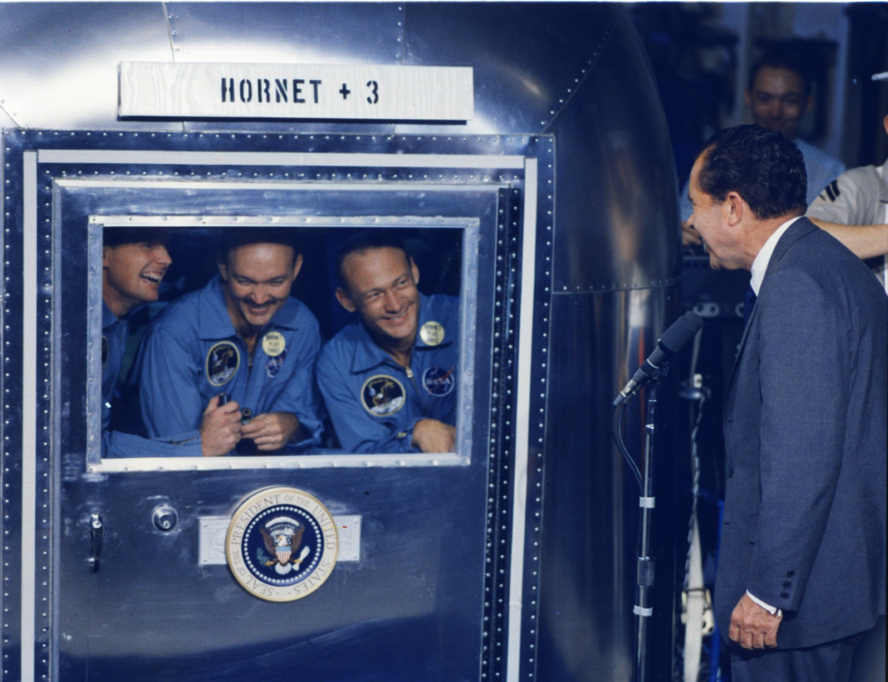

After their fitful rest period, the moon dwellers were roused by Houston and told to get ready to leave. Flight control and the crew discussed the most probable location of the lunar module, and Armstrong and Aldrin then aligned the guidance platform by the moon's gravity field. They had some difficulty finding enough stars to sight on, but the Eagle was ready to take off on 21 July - 21 hours 36 minutes after landing and more than 124 hours after leaving the earth on 16 July. Up above, Collins had been alone since the 13th revolution, and he did not expect to have company until the 27th circuit, 28 hours after the lander had separated from the command module. As the time drew nearer for ignition of the ascent engine, Collins positioned his ship so its radar transponder would be pointing in the direction of the lunar module radar signal. Everything was ready for the next critical move.
The Eagle lifted off the moon exactly on time, soaring straight up for 10 seconds to clear its launch platform (the descent stage) and the surrounding ground obstacles. When its speed reached 12 meters per second, it pitched over into a 50-degree climbing angle. Armstrong and Aldrin heard the pyrotechnics fire and saw "a fair amount of debris" when they first detected motion. The onset of this velocity was absolutely smooth, and they had difficulty sensing the acceleration. But when the cabin tilted over and they could see the lunar surface, they realized that they were going fast. On several occasions, familiar landmarks indicated they were on a correct flight path - Armstrong spoke of one named "Cat's Paw" and Aldrin spotted "Ritter" and "Schmidt."
As Eagle rose to dock with CM Columbia, "home Earth," the next target to land on, came into view on the lunar horizon.
Stafford and Cernan had told Armstrong about their lander's lazy, wallowing "Dutch roll," and the Eagle was flying the same way. When the engine had fired for seven minutes, the lunar module had reached an elliptical orbit of 17 by 84 kilometers, and the race to catch the mother ship was on. Another hurdle had been successfully vaulted. Collins could now call on one of the 18 recipes in his rendezvous cookbook to rescue the lander if necessary. An hour after the ascent engine's first firing, Armstrong turned it on again, to kick the low point of the path up to 85 kilometers, to a nearly circular orbit. After checking the results with flight control, as well as with Armstrong and Aldrin, Collins found that the lander was on a good flight path. He could let orbital mechanics take over and wait until Armstrong slowed the lander's catchup speed at the proper moment.
Eventually, Collins told his crewmates to turn off their tracking light; he could see them fine without it. Later, as the lander turned the lunar corner and lost contact with the earth, Armstrong slowed his vehicle for stationkeeping 30 meters from the command module, so Collins could inspect the lander before docking. During the inspection, Collins asked his shipmates to roll over a bit more, and they went straight into gimbal lock. Armstrong blamed himself for "the goof," but it posed no real problems. Like all the lunar modules, the Eagle was a sporty machine once it was rid of its descent stage and much of its ascent engine fuel, and it took skill to keep the skittish bird from dancing about. Four hours after lunar launch, the two vehicles were ready to dock.
Collins rammed the probe dead center into the lander's drogue. With the ascent stage fuel tanks nearly empty, he met with little resistance; it felt almost as though he was shoving the command module into a sheet of paper. He had to look out the window to make sure they were docked. Then he pressed the switch to reel the lander in closer and secure it with the capture latches. Suddenly there was a big gyration in yaw - perhaps because of the retraction, perhaps because of a lunar module thruster that seemed to be firing directly at the command ship. Collins used his handcontroller to steady the vehicles. Just as he was wondering if he would have to cut loose and try again, Columbia grabbed the Eagle and held on.
Collins hurried to get the hatch and probe out of the way, to greet his returning companions. As he did, the same strong smell of burnt electrical insulation met his nostrils. But, again, nothing seemed to be wrong. Armstrong and Aldrin began vacuuming the lunar dust from themselves, their equipment, and the sample boxes. The dust did not bother the trio much, and they began unloading, cleaning, and stowing. Their progress was so good that flight control considered bringing them home one revolution earlier than the planned 31st circuit (one less than the Stafford crew had traveled). But they decided against it.
During the 28th orbit, Armstrong reported the crew safely aboard the command ship. Flight control soon signaled the lander to remain near the moon until its orbit decayed and it crashed on the surface. The Eagle flew slowly away, its thrusters firing to maintain attitude. Aldrin thought he saw some cracks in its skin, but Houston told him that cabin pressure was steady. That had been one very good bird.
Now the crew had nothing to do but rest, eat, take pictures, and wait to begin the return to earth. Collins did wrestle with some command module attitude excursions but, once the big service module engine fired behind the moon, the ship steadied, right on course. The firing lasted so long that Collins wondered if the automatic turnoff was going to work. Just as he reached for the switch, the engine stopped. After the crew had checked the results, all they could do was ride their stable machine home. Armstrong asked when they would acquire the flight control signal, and Aldrin, now totally relaxed, answered that he did not have "the foggiest" notion. Soon the commander wanted to know if anyone had any choice greetings when they did talk to Houston, but no one volunteered. Aldrin readied a camera to photograph the earthrise. Coming around the corner, Collins called to CapCom Duke, "Time to open up the LRL doors, Charlie."
Now they "mostly just waited," as Collins later said. Flight control passed up the usual newscast, telling them that only four nations* in the world had not told their citizens about the flight. President Nixon, in his White-House-to-Moon chat, had mentioned that he would meet them on the Hornet; now they learned that he was sending them on a world tour. After more news - about Vietnam, the Middle East, oil depletion allowances, and a drop in the Dow industrial averages - the astronauts knew they had truly returned from Tranquility.
On television they, like the Borman and Stafford crews before them, philosophized about the significance of their voyage. Armstrong spoke of the Jules Verne novel about a trip to the moon a hundred years earlier, underscoring man's determination to venture out into the unknown and to discover its secrets. Collins talked of the technical intricacies of the mission hardware, praising the people who had made it all work. Aldrin spoke about what the flight meant to mankind in striving to explore his universe and in seeking to promote peace on his own planet. Armstrong closed the session, speaking of Apollo's growth from an idea into reality and ending with, "God bless you. Good night from Apollo 11."
The pilots watched the earth grow larger and larger. They televised more of life in a spacecraft. A day before landing, they checked out the command module entry monitoring system, so flight control could check for "any funnies," as Collins called them. But there did not appear to be any. Stowage went smoothly. After they turned the ship into the reentry position and kicked off the service module, they saw it sail by, carrying with it the engine that had served them so well.
As they neared the earth, Houston began grumbling about the weather in the target zone - thunderstorms and poor visibility. Finally the landing point was moved. Collins was not very happy about trying to reach a spot 580 kilometers farther downrange than he had trained for. He did not complain, but he worried some.
When the command module hit the reentry zone, Aldrin triggered a camera to capture on film, as best he could, the colors around the plasma sheath - lavenders, little touches of violet, and great variations of blues and greens wrapped around an orange-yellow core. A surprisingly small amount of material seemed to be flaking off the spacecraft; Collins did not see the chunks he had seen in Gemini.
By now, the crew had turned the spacecraft over to its computer - that fourth crew member who had done a lot of the mission flying to this point - and were watching the entry monitor. The computer held on to a small downrange error for a while, decided it was wrong, and dumped the figure. The vehicle dipped down into the atmospheric layer, zipped up in a roller coaster curve out of the layer, and then came screaming back in. The drogue parachutes opened, and the ship steadied. Armstrong and his crew felt the jerk as the main parachutes came out; it seemed to take a long time for those three parachutes to blossom. Some good sounds came up from below as they heard the recovery forces trying to talk to them at the end of the reentry communications blackout. Reentry was fairly comfortable for the crewmen, without their bulky suits, but splashdown came with a jolt - 24 June 1969 - 8 days, 3 hours, 18 minutes, 18 seconds after leaving Cape Kennedy.**
Mission Control celebrates the successful conclusion of the Apollo 11 mission that landed men on the moon and returned them safely to the earth.
Columbia landed close to its reprogrammed target and flipped over on its nose in the water, but a flick of a switch inflated the air bags and it soon turned upright. None of the crew were seasick, but they had taken preventive medication before the landing. They went through a lengthy checklist of the things to be done to keep the world free from contamination. It had been a long trip.
A swimmer threw them the biological isolation garments, and they put them on. Armstrong disembarked first, followed by Collins and then Aldrin. As they passed through the hatch they inflated their water-wing life preservers before jumping into the raft. Armstrong noticed that a swimmer was having trouble closing the hatch; he went over to help - the commander did not want anything to happen to "those million dollar rocks." He had trouble, too, so Collins came back and adjusted the handle; then they closed the door.
Looking like three men from another planet in their biological isolation garments, Aldrin, Armstrong, and Collins (left to right at left) step from the helicopter onto the deck of the carrier Hornet on their way into the Mobile Quarantine Facility.
In the rubber boat, the astronauts were scrubbed down with an iodine solution by the swimmers; they, in turn, did the same for the frogmen. While a helicopter lifted the crew to the U.S.S. Hornet, the spacecraft got its scrubdown before it, too, was lifted to the ship. The travelers stepped from the aircraft onto the carrier deck and straight into the mobile isolation unit. The "national objective of landing men on the moon and returning them safely to earth before the end of the decade" had been achieved.

After removing the isolation garments and freshening up, the three (Armstrong, Collins, and Aldrin, left to right) are greeted by President Nixon.
But the safe recovery was not the end of activities for Apollo 11. First, the crewmen changed from the isolation garments to more comfortable flight suits and crowded to the door where, behind glass, they presented their now familiar countenances (although Collins had grown a moustache that altered his looks) to the TV cameras. Years of study of the lunar samples lay ahead, and the crew had to spend their 21 days in quarantine. During that period, they answered a formidable set of questions about everything that had taken place, relying on both notes and memory, to make sure that they had done all they could to assist the crews that would follow them to the moon. Collins closed these thorough and exhaustive sessions by saying, emphatically, "I want out."
Scientists in the Lunar Receiving Laboratory, working through glove ports, examine a moon rock.
When they did get out, there was the swirl of a world tour; men and women from all walks of life, of varying colors, creeds, and political persuasions, both young and old, hailed the feat of mankind's representatives. "For one priceless moment . . . ."11
One of the stops before Collins (at the speakers stand), Armstrong, and Aldrin left on a world tour was to report to a joint session of Congress.
Event Time hr:min:sec ===================== =============== Liftoff 00:00:00.6 S-IC outboard engine cutoff 00:02:41.7 S-II engine ignition (command) 00:02:43:0 Launch escape tower jettison 00:03:17.9 S-II engine cutoff 00:09:08.3 S-IVB engine ignition (command) 00:09:12.2 S-IVB engine cutoff 00:11:39.3 Translunar injection maneuver 02:44:16.2 CSM/S-IVB Separation 03:17:04.6 First docking 03:24:03.1 Spacecraft ejection 04:16:59.1 Separation maneuver (from S-IVB) 04:40:01.8 First midcourse correction 26:44:58.7 Lunar orbit insertion 75:49:50.4 Lunar orbit circularization 80:11:36.8 Undocking 100:12:00.0 Separation maneuver (from LM) 100:39:52.9 Descent orbit insertion 101:36:14.0 Powered descent initiation 102:33:05.2 Lunar landing 102:45:39.9 Egress (hatch opening) 109:07:33.0 Ingress (hatch closing) 111:39:13.0 Lunar liftoff 124:22:00.8 Coelliptic sequence initiation 125:19:36.0 Constant differential height maneuver 126:17:49.6 Terminal phase initiation 127:03:51.8 Docking 128:03:00.0 Ascent stage jettison 130:09:31.2 Separation maneuver (from ascent stage) 130:30:01.0 Transearth injection maneuver 135:23:42.3 Second midcourse correction 150:29:57.4 CM/SM separation 194:49:12.7 Entry interface 195:03:05.7 Landing 195:18:35.0
Event Time, GMT
================ =========
24 July
Visual contact by aircraft 16:39
Radar contact by U.S.S. Hornet 16:40
VHF voice and recovery-beacon contact 16:46
CM landing 16:50
Flotation collar inflated 17:04
CM hatch open 17:21
Crew egress in biological isolation garments 17:29
Crew aboard Hornet 17:53
Crew in Mobile Quarantine Facility (MQF) 17:58
CM lifted from water 19:50
CM secured to MQF 19:58
CM hatch reopened 20:05
Sample return containers 1 and 2 removed from CM 22:00
Container 1 removed from MQF 23:32
25 July
Container 2 removed from MQF 00:05
Container 2 and film sent to Johnston Island 05:15
Container 1, film, and biological samples sent
to Hickam AFB, Hawaii 11:45
Container 2 and film arrival in Houston 16:15
Container 1, film, and biological samples arrival
in Houston 23:13
26 July
CM decontaminated and hatch secured 03:00
MQF secured 04:35
27 July
MQF and CM offloaded 00:15
Safing of CM pyrotechnics completed 02:05
28 July
MQF arrival at Houston 06:00
Flight crew to LRL 10:00
30 July
CM delivery to LRL 23:17
* China, Albania, North Korea, and North Vietnam.
** According to the command module computer, Columbia landed at 13 degrees 19' north latitude and 169 degrees 9' west longitude.
11. "Apollo 11 Debriefing," 2: 11-3, 11-4, 11-6, 12-3 through 12-6, 12-10, 12-11, 12-14, 12-20 through 12-25, 12-32, 12-33, 12-38 through 12-43, 13-1 through 13-5, 14-1, 14-3, 14-5, 14-10 through 14-13, 15-1 through 15-7, 16-l through 16-7; "Onboard Voice," pp. 158-59, 161, 175-80, 183-86, 189, 193-05, 207-10, 214-16, 218, 221-22, 225-26, 236-243, 247; "Apollo 11 Voice," pp. 470, 480-82, 488-92, 496-99, 502, 516, 521, 523-35, 538, 543-47, 550, 554-57, 564, 570, 572, 574, 576, 583-88, 604, 608-10, 613-14, 623-24; Charlesworth et al., "Flight Directors Report," pp. 18-25; "Mission Report," pp. 1-2, 3-2, 3-4, 3-5, 4-16 through 4-20, 5-8 through 5-11, 7-4, 7-5; Apollo Program Summary Report, JSC-09423, April 1975 (published as NASA TM-X-68725, June 1975), p. 2-38; Hage memo, "Apollo 11 Daily Operations Report No. 6," 22 July 1969; Hage memo, 24 July 1969; Mission Report: Apollo 11, pp. 5-7; Collins to Grimwood, 13 Dec. 1976; Armstrong to JSC History Off., 3 Dec. 1976; Edwin E. "Buzz" Aldrin, Jr., with Wayne Warga, Return to Earth (New York: Random House, 1973), p. 241.